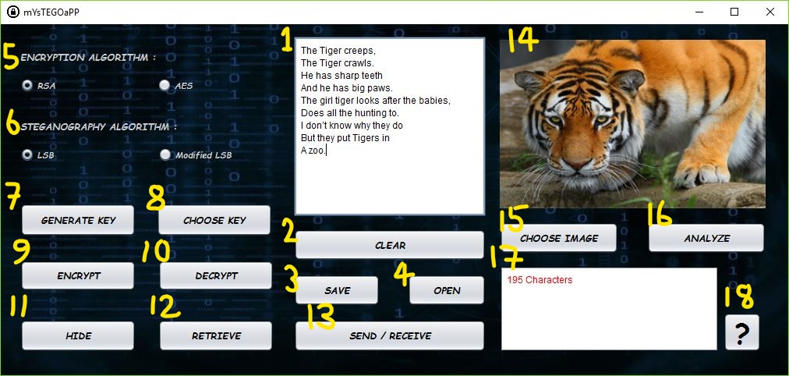

How it's done
In this section we will provide you with a simple guide on how to use the application. The various components of the application and each of their purpose are given below:

- Message Pane : The message is typed here or a text file can be displayed.
- Clear : This button is used to clear the text in the message pane.
- Save : This button is used to save the text displayed in the message pane.
- Open : This button is used to open a text document and display it in the message pane.
- Encryption Algorithm : This radio buttons are used to select the algoritm used for encryption or decryption.
- Steganoography Algorithm : This radio buttons are used to select the algoritm used for hiding or retrieve message from image.
- Generate Key : This button is used to generate a key for the selected algorithm to be used for encryption-decryption.
- Choose Key : This button is used to choose a previously generated key for the selected algorithm to be used for encryption-decryption.
- Encrypt : This button is used to encrypt the message in the message pane and display the corresponding cypher text.
- Decrypt : This button is used to decrypt the cypher text in the message pane and display the original message.
- Hide : This button is used to hide the text in the messsage pane within the image.
- Retrieve : This button is used to retrieve the hidden text from the stego image and display it in the message pane.
- Send/Receive : This button is used to send/receive the key, encrypted messages or stego images.
- Image Pane : The cover image/ stego image gets displayed here.
- Choose Image : This button is used to choose an image.
- Analyze : This button is used to analyze whether the message will fit in the cover image.
- Notification Pane : Various notifications or suggestions are displayed here.
- Help : This button is used to display the help section.
You can do the following with your application:
- Encrypt a message
- Decrypt an encrypted message
- Hide a message in an image
- Retrieve hidden message from an image
- Encrypt a message and then hide it in an image
- Retrieve encrypted message from an image and then decrypt it
- Use multiple encryption
- Use Digital Envelope technique
- Try various combinations of above techniques
Encrypting a message
Steps:
- Write a message in the message pane or open a text document.
- Choose the encryption algorithm you want to use.
- Generate or Choose a key/s.
- Hit the "Encrypt" button.
- Save the encrypted text.
- Send the key(public) and the encrypted message to the receiver(incase of Symmetric key cryptography it is not advised to send the key through email).
Decrypting an encrypted message
Steps:
- Receive the encrypted message and key(public) from sender.
- Open the encrypted message.
- Choose the same encryption algorithm as used by sender.
- Choose the key from the sender.
- Hit the "Decrypt button".
- Save the original message.
Hiding a message in an image
Steps:
- Write a message in the message pane or open a text document.
- Choose the steganography algorithm you want to use.
- Hit the "Choose Image" button to choose a cover image.
- Hit the "Hide" button and save the stego image.
- Send the stego image to the receiver.
Retrieveing hidden message from an image
Steps:
- Receive the stego image sent by sender.
- Choose the image sent by the sender by hitting the "Choose Image" button.
- Choose the same steganography algorithm as used by the sender.
- Hit the "Retrieve" button and the original message is displayed in the message pane.
- Save the original message.
Encrypt + Hide
Steps:
- Write a message in the message pane or open a text document.
- Choose the encryption algorithm you want to use.
- Generate or Choose a key/s.
- Hit the "Encrypt" button.
- Choose the steganography algorithm you want to use.
- Hit the "Choose Image" button to choose a cover image.
- Hit the "Hide" button and save the stego image.
- Send the key(public) and the stego image to the receiver.
Retrieve + Decrypt
Steps:
- Receive the stego image and the key(public) sent by sender.
- Choose the image sent by the sender by hitting the "Choose Image" button.
- Choose the steganography algorithm used by the sender.
- Hit the "Retrieve" button and the encrypted message is displayed in the message pane.
- Receive the key from sender.
- Choose the same encryption algorithm as used by sender.
- Choose the key from the sender.
- Hit the "Decrypt button".
- Save the original message.
Multiple-Encryption
Steps:
- Write a message in the message pane or open a text document.
- Choose the encryption algorithm you want to use.
- Generate or Choose a key/s.
- Hit the "Encrypt" button.
- Save the encrypted text.
- Send the key(public) to the receiver.
- Repeat steps 2 to 5 as many times as you want.
- Send the encrypted message to the receiver.
Multiple-Decryption
Steps:
- Receive the encrypted message and keys(public) from sender.
- Open the encrypted message.
- Choose the encryption algorithms in the reverse of the order as used by sender.
- Choose the keys from the sender in reverse of order in which they were sent.
- Hit the "Decrypt button".
- Repeat steps 2 to 5 as many times as the number of keys.
- Save the original message.
Digital Envelope Technique
Encryption
Steps:
- Choose the RSA encryption algorithm.
- Generate the keys.
- Choose the AES encryption algorithm.
- Generate a key.
- Open the AES key in the message pane
- Choose the RSA encryption algorithm.
- Choose the same RSA keys
- Hit the "Encrypt" button.
- Save the encrypted key.
- Send the encrypted AES key and the RSA public key to the receiver.
- Write a message in the message pane or open a text document.
- Choose AES encryption algorithm
- Choose the same AES key
- Hit the "Encrypt" button.
- Send the encrypted message to the receiver.
Decryption
Steps:
- Choose the RSA encryption algorithm.
- Choose the RSA key sent by the sender.
- Choose the AES encryption algorithm.
- Open the AES key in the message pane
- Hit the "Decrypt" button.
- Save the decrypted key.
- Choose AES encryption algorithm.
- Choose the saved decrypted AES key.
- Open the encrypted message in the message pane.
- Hit the "Decrypt" button.
- Save the original message.